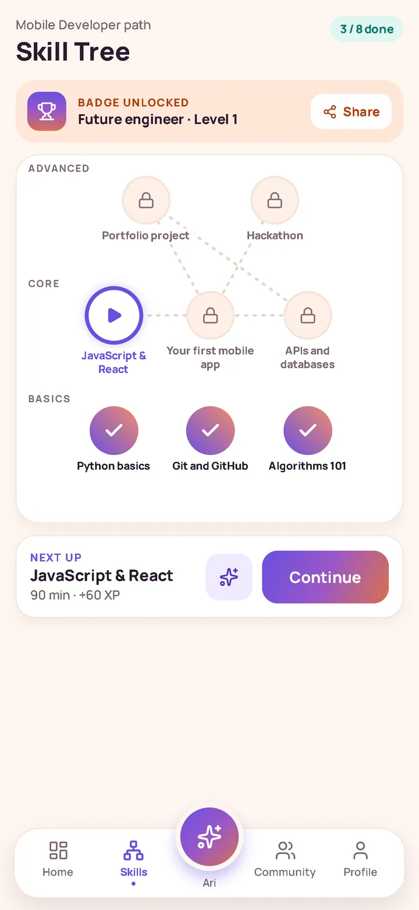
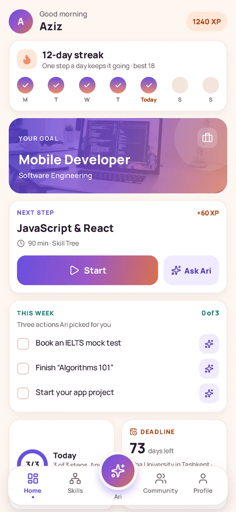
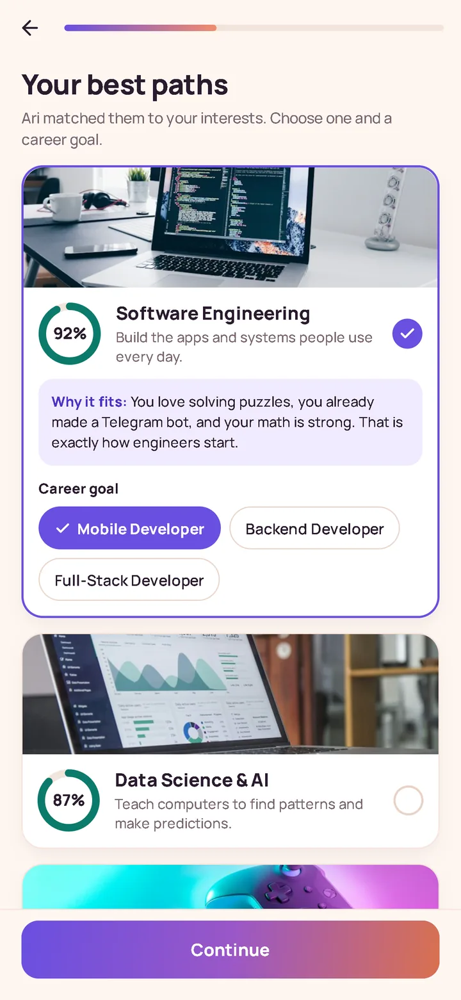
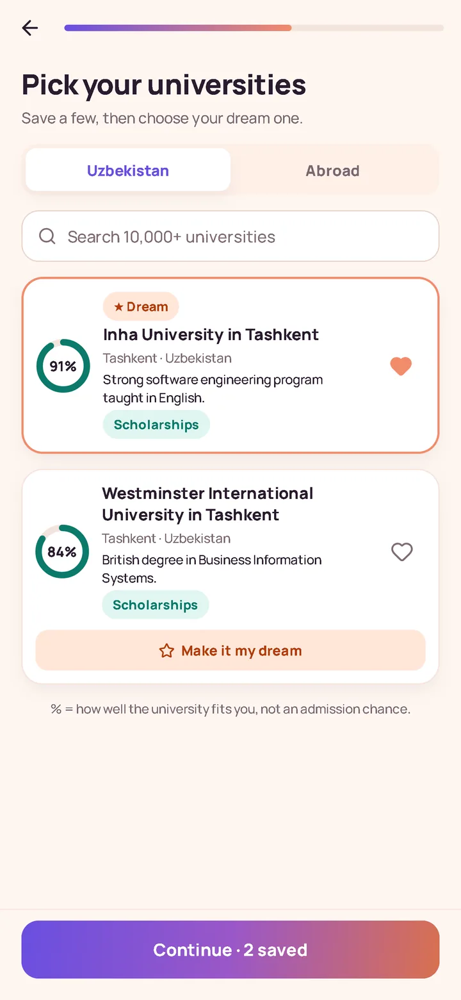
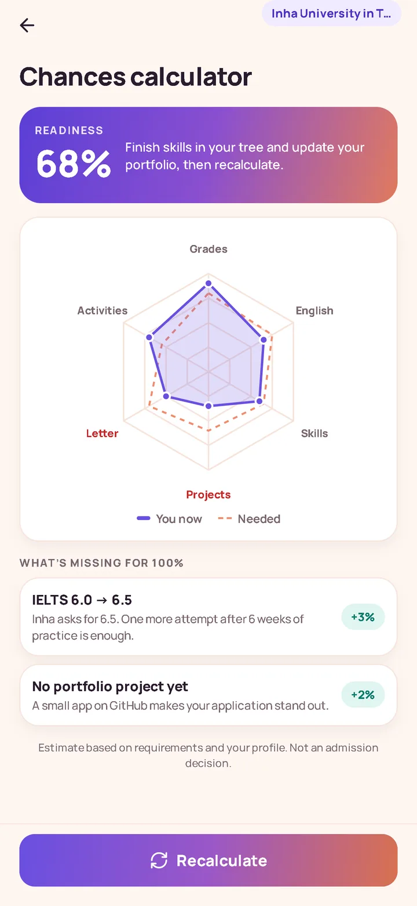

Arise.
A personal guide to career, university and grants for school students in Uzbekistan. We designed it, built it and run it.



- Product
- Mobile app
- Platforms
- iOS and Android
- Languages
- Uzbek, Russian, English
- Our role
- Product, design, engineering, AI
- Year
- 2026
- Status
- Live · coming to the stores
- Languages
- 3
- Platforms
- 2
- Sign-in options
- 3
Students were choosing their future alone.
Most school students in Uzbekistan choose a profession and a university with little guidance. Information about programmes, requirements and grants is spread across websites and Telegram channels, and it is often out of date.
We wanted to give every student a clear plan, not one more list of links.
A plan for each student, and a mentor to follow it.
Personal plan
The student picks a goal, for example UX designer. Arise builds a path of skills, courses and next steps around it.
Skill tree
Progress is shown as a tree. Finished skills are ticked, the current one is highlighted and the next ones unlock along the way.
Ari, the AI mentor
Ari answers questions, explains skills and makes plans, such as a two-week study plan for a future UX designer.
Easy start
Sign in with Google or Apple, or try the app as a guest. Light and dark themes are built in.



An AI mentor that does not make things up.
Students ask direct questions: which university, which subject, which deadline. A fluent answer that invents a scholarship is worse than no answer at all. So Ari is built around retrieval first and generation second. University facts, deadlines and requirements come from a verified catalogue; the model composes the route, not the facts.
- Every answer has a next step, a reason and a source
- When the catalogue has no answer, Ari says so and suggests the closest verified option
- The rules for refusals were written before the first prompt
A mentor that admits the gap is more useful than one that fills it with noise.
— Nurahmadov Xayrullo, machine learning
Three languages from the first day.
Multilingual support is not a translation layer on top. English, Russian and Uzbek prompts share the same structured contract, and the mentor answers in the language the student used — including the mixed language students actually type.
One codebase for iOS and Android.
The app is built once and runs on both platforms. The AI layer looks up facts in a verified catalogue before the model writes an answer.